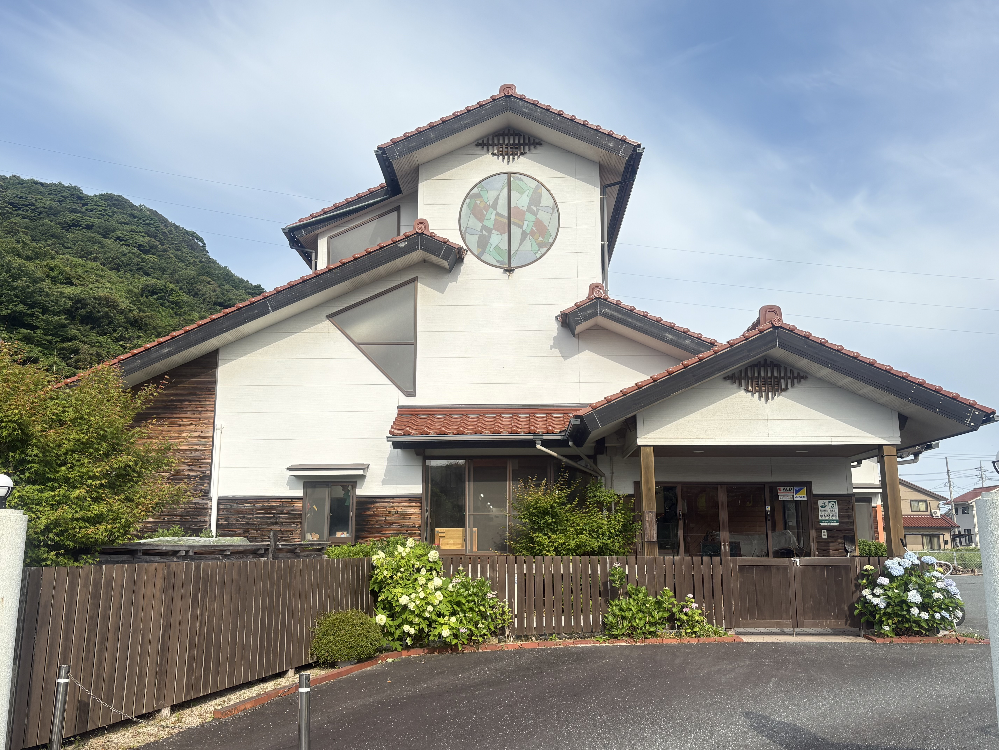
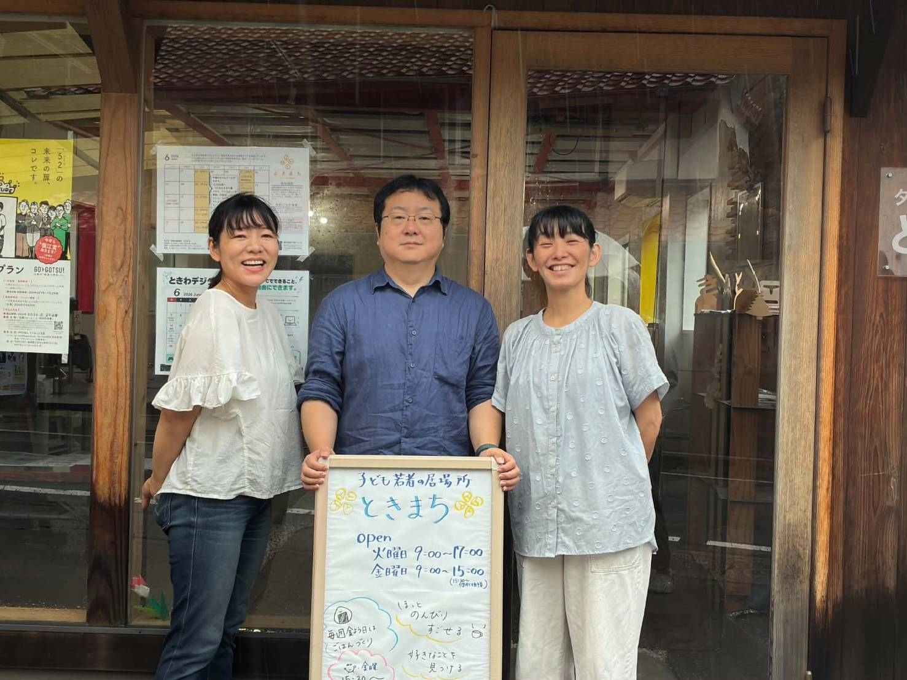
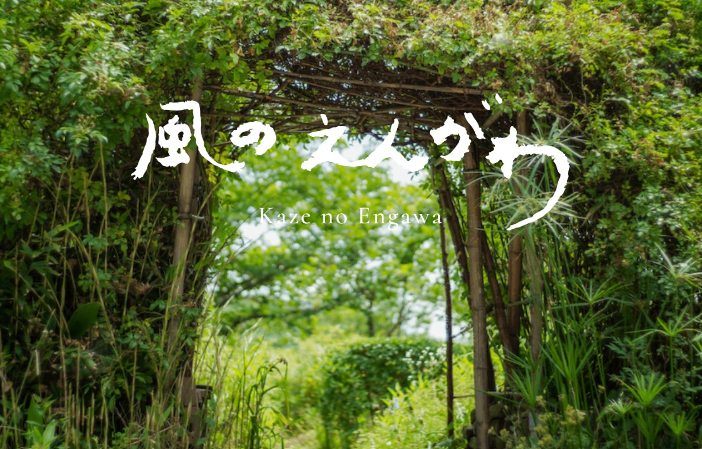
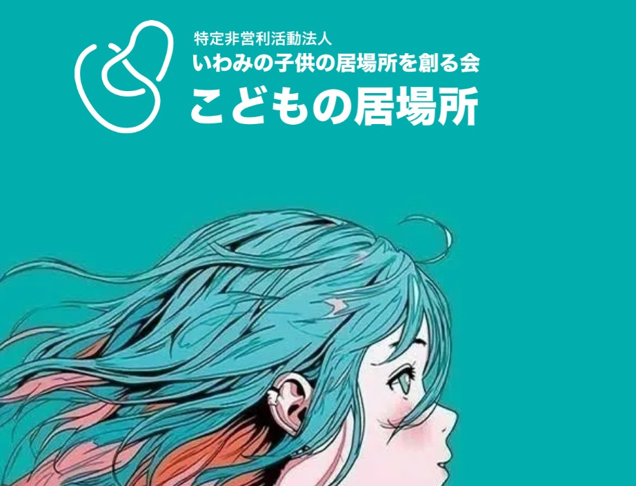
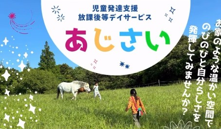
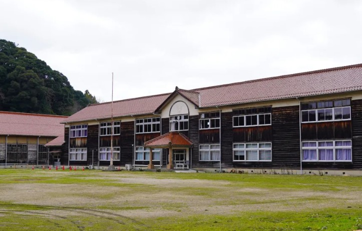
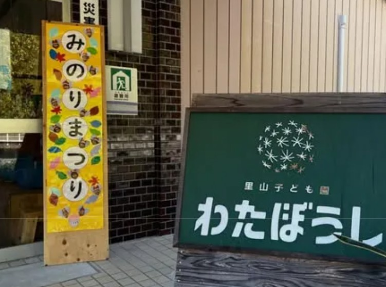
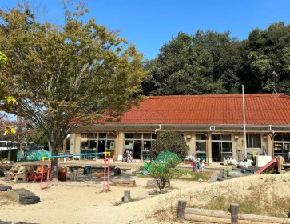
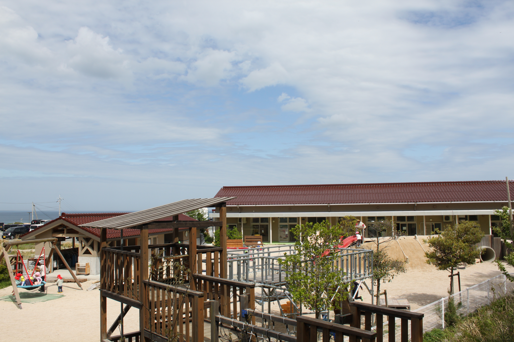
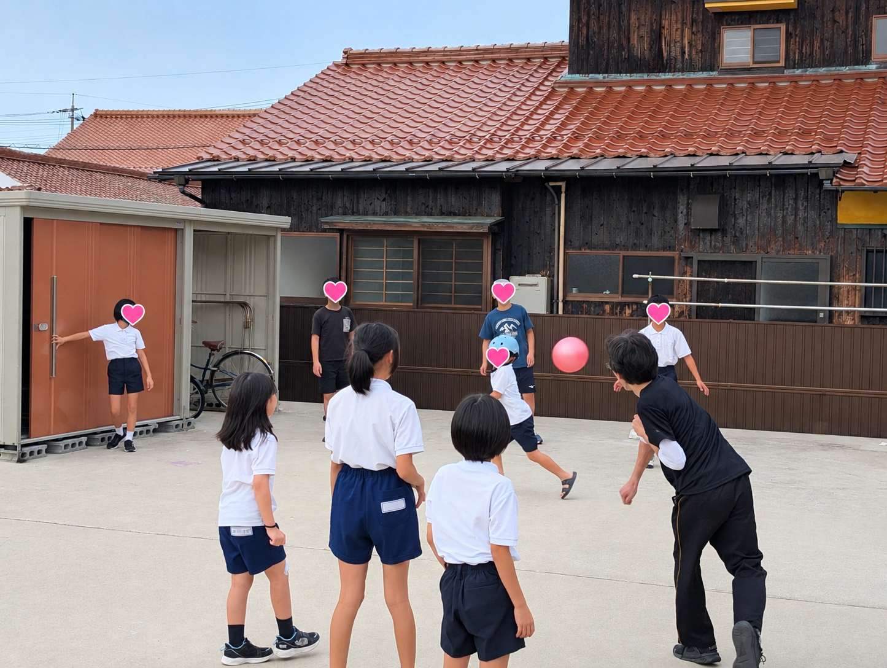

みんなでほっこり
『ピンクの場所』
誰かと同じ空間でゆったり過ごせる場所。話してもいいし、ただいるだけでもOK。
この場所の一覧

子どもの居場所
ホームページ ↗
こうとうキャンパス（あさりこども園）
| 対象 | 卒園した生徒・法人で働く保護者の子ども |
| どんなサポートや活動をしている？ | 園児たちのサポート |
| 時間 | 平日 9:00〜17:00 |
| 費用 | 無料 |
| 利用ルート | 口コミ |
| 住所 | 江津市浅利町336-4 |
| 電話 | 0855-55-1024 |

居場所・交流
ときまち
| 対象 | 小学生〜39歳（現在：小3×3名・小4×1名・高校生2〜3名・社会人2〜3名） |
| どんなサポートや活動をしている？ | 話を聞く・遊ぶ・歌う・ギターなど居場所で過ごす。地域食堂ボランティア（第3土曜）・みんなでご飯をつくろう（毎週金曜）・馬牧場レライへの社会体験（月1回）・ゲーム大会・散策・アクアス。高校生以上はeスポーツも同時開催。 |
| 時間 | 火・金 9:00〜15:00 ／ 第4月曜 15:00〜18:00（高校生以上・eスポーツ同時開催） |
| 費用 | 無料（金曜日の食事代も無料） |
| 利用ルート | HP・公式LINE・インスタ・生活支援相談センターとの連携 |
| 住所 | 江津市江津町331 |
| 電話 | 0855-52-5319 |

古民家・居場所
風のえんがわ
| 対象 | その子に応じて対応可能 |
| どんなサポートや活動をしている？ | クッキー詰め・お菓子作り・庭仕事・子どものお世話・接客など手作業中心。古民家を活用しており家のように過ごせる。体を動かして自分の役割を持ち、感謝される体験ができる。 |
| 時間 | 火〜金 8:30〜17:30 |
| 費用 | まかない 300円 |
| 利用ルート | こうとうキャンパス・ときまち経由の口コミ |
| 住所 | 江津市後地町2398 |

フリースクール・オンライン
NPO法人 こどもの居場所（浜田市）
| 対象 | 小・中・高校生（石見地区対象） |
| どんなサポートや活動をしている？ | オンラインで不登校・ひきこもり状態の子どもと会話や学習指導（フリースクール） |
| 時間 | 平日 9:00〜15:00 |
| 費用 | 未定（10,000円以下を予定） |
| 利用ルート | 小中学校の一斉メール・チラシ |
| 住所 | 浜田市田町1655 |
| 電話 | 0855-25-5110 |

児童発達支援・放課後等デイサービス
児童発達支援 放課後等デイサービス あじさい
| 対象 | 受給者証をお持ちの就学前〜高3（江津市内・大田市西部にお住いの方） |
| どんなサポートや活動をしている？ | ホースセラピーを中心に活動。子ども・家庭・地域が互いに結ばれ、支え合いながら一人ひとりの個性が自然に花開くような居場所を目指します。 |
| 時間 | 児童発達支援：月〜金 9:30〜11:00 ／ 放課後等デイサービス：月〜金 13:30〜17:00（17時送迎出発） |
| 費用 | 要 |
| 利用ルート | HP（花の村）・パンフレット・チラシ・相談支援センター |
| 住所 | 江津市後地町3165-3 |
| 電話 | 090-8034-3331 |

居場所・体験
Instagram ↗
クレアト
| 対象 | 小学生・中学生 |
| どんなサポートや活動をしている？ | 「来れば、跡市に。」そんなノリでふらっと来ることができて、自分の「やりたい」をクリエイトする場所。跡市の自然の中で思いっきり遊ぶ・工作やクッキングなど何かを作る。 |
| 時間 | 火曜 9:00〜15:00（ときまち間の送迎あり） |
| 費用 | 無料（活動内容によって実費かかる場合あり） |
| 利用ルート | 公式インスタグラム・ときまちからの紹介など |
| 住所 | 江津市跡市町632 |
| 電話 | 0855-56-2104 |

居場所・交流
フリースペース結のひろば（里山子ども園わたぼうし）
| 対象 | 誰でも |
| どんなサポートや活動をしている？ | プレーパーク活動。年齢・居住地を問わず誰でも利用できる交流・遊びの場を提供。親子や地域住民がつながる居場所づくりを目的としています。 |
| 費用 | 無料 |
| 利用ルート | 口コミ・SNS発信 |
| 住所 | 島根県江津市跡市町625-1 |
| 電話 | 0855-56-2104 |

子どもの居場所
さくらこども園
| 対象 | 卒園した生徒・法人で働く保護者の子ども |
| どんなサポートや活動をしている？ | 園児たちのサポート・環境整備等 |
| 時間 | 平日 9:00〜17:00 |
| 費用 | 無料（食事代は必要） |
| 利用ルート | 電話・メール |
| 住所 | 江津市後地町843-1 |
| 電話 | 0855-55-0017 |

子どもの居場所
うさぎ山こども園
| 対象 | 市内の小・中・高校生（一人で歩いて来られる距離。場合によっては保護者送迎可） |
| どんなサポートや活動をしている？ | 安心できる場所提供・園児とのふれあい・保護者さんも気軽に相談できる |
| 時間 | 平日 8:00〜16:00（長期休業は除く） |
| 費用 | 食事代のみ（1食300円） |
| 利用ルート | 口コミ |
| 住所 | 江津市和木町518-1 |
| 電話 | 0855-54-1425 |

居場所・交流
メール ✉
おっちゃんち
| 対象 | 小学校1年生から大学生まで |
| どんなサポートや活動をしている？ | 放課後の居場所、おっちゃん食堂（別料金） |
| 時間 | 平日 13:00〜17:00（長期休暇中 9:00〜17:00） |
| 費用 | 1回100円（月一括払い1,500円）、おっちゃん食堂500円 |
| 利用ルート | 直接連絡してもらえれば相談しながら調整します |
| 住所 | 江津市都野津町2279-23 |
| 電話 | 090-1689-8012 |